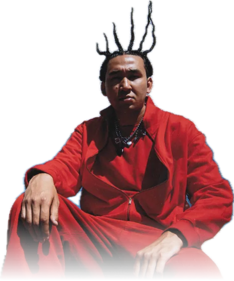
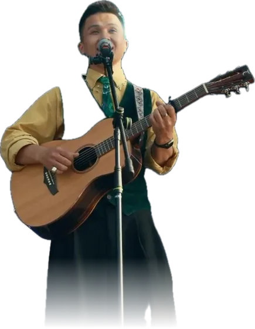
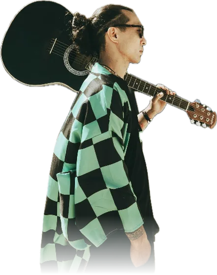
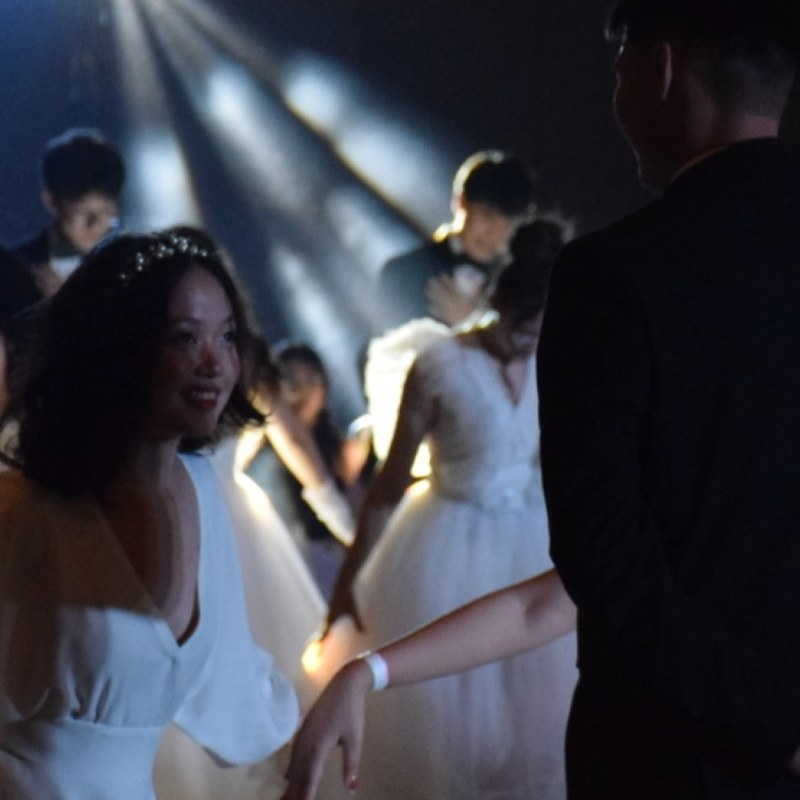
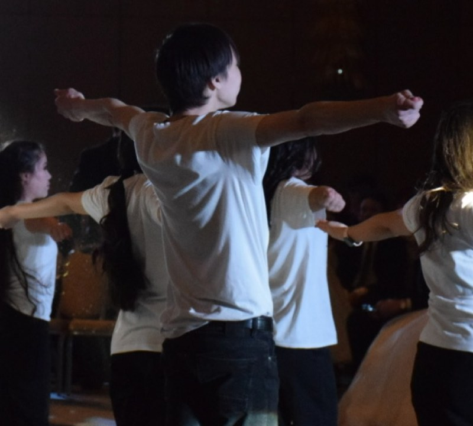
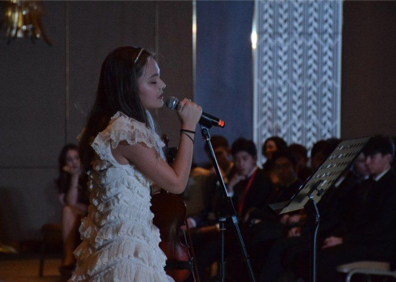
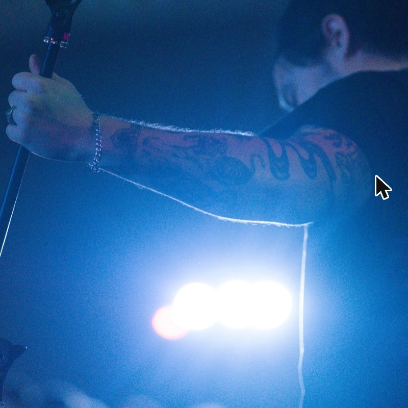
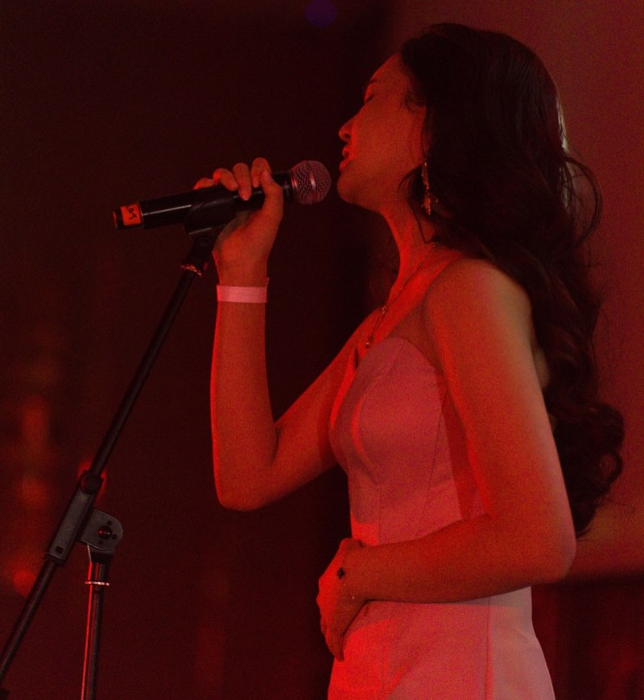
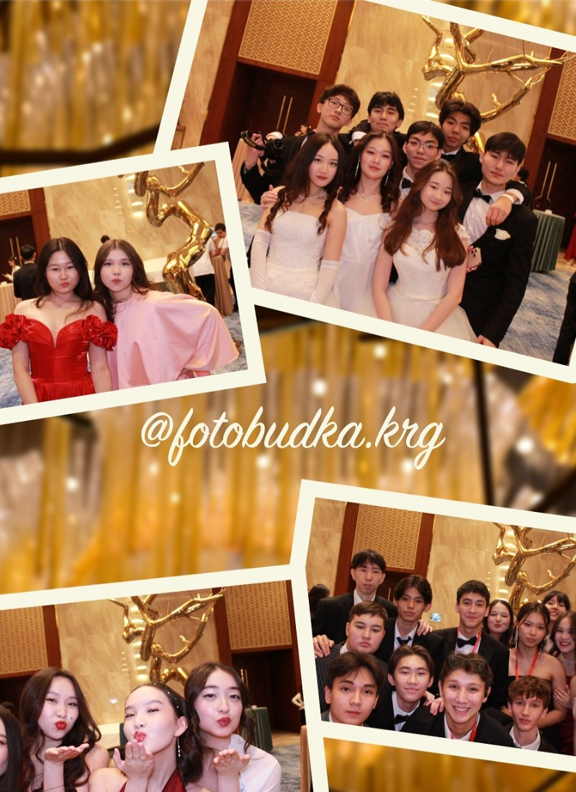

Зима 2027, Астана
Vienna Ball
Ежегодный благотворительный бал студсовета НИШ ЕМН Астана-Нура. Вальс, живая музыка и один вечер, ради которого школа готовится всю зиму.
Дату и площадку объявим скоро

В одной школе Астаны есть вечер, которого ждут весь год. Зимой её коридоры превращаются в бальный зал: девушки выбирают платья, юноши учатся вести в вальсе, а студсовет до поздней ночи ищет музыку, свет и добрых волшебников, которые помогут. И когда звучат первые три такта, сказка становится настоящей: каждый билет и каждое пожертвование превращаются в чью-то помощь.
Шесть балов
Каждый год мы находим зал больше и готовим вечер лучше, чем в прошлый раз.
- 1
MNU
Первый бал
С него всё началось: первый вальс студсовета и первый благотворительный сбор.
- 2
Marriott
Второй бал
Собрали 228 000 ₸ на благотворительность.
- 3
Wyndham Garden
Третий бал
Собрали 1 356 790 ₸.
- 4
Hilton Astana
18 января 2025
Собрали 1 750 000 ₸ для Союза родителей особенных детей. Хедлайнер вечера: Bonapart.
- 5
Rixos President Astana
1 марта 2026, Aurora Ball
Бал, вдохновлённый рассветом. Хедлайнер вечера: Plecto.
- 6
Vienna Ball 2027
Зима 2027
Пятизвёздочный отель Астаны. Дату и площадку объявим в Instagram студсовета.
За второй, третий и четвёртый балы собрано 3 334 790 ₸
Звёзды наших балов
Те, кто выходил на нашу сцену. Свет прожекторов всё ещё ищет их.
Bonapart
Хедлайнер бала 2025
Plecto
Хедлайнер Aurora Ball 2026
Aikyn Tolepbergen
Хедлайнер прошлых лет

Dudeonthe guitar
Хедлайнер прошлых лет

Doss Normat
Гость бала 2025
Nova Dance
Танцевальная группа, 2025 и 2026

Darkhan Juzz
Хедлайнер прошлых лет. Светлая память
Как это было







Фото с бала 2025: @kkuksishka, @amgsbba. Фотобудка: @fotobudka.krg.
Сбор 2027
Цель этого бала: 4 000 000 ₸. Пожертвования выпускников и взносы партнёров идут в благотворительный сбор, отчёт публикуем в течение 10 дней после бала.
0 ₸ из 4 000 000 ₸
Сбор откроется вместе с продажей билетов.
На что мы копим
Шесть добрых дел для фондов и центров Астаны. Чем больше соберём, тем больше из них сбудется.
-
Реабилитация детей и взрослых с ДЦП
БФ «Адал Ниет Астана»
Электрический имитатор ходьбы или полный комплекс для зала ЛФК: вертикализатор, педальные тренажёры и шведские стенки.
от 1 200 000 до 1 500 000 ₸
-
Центр для детей и молодёжи с ментальными нарушениями
ОФ «Балам-ай»
Сенсорная комната под ключ: пузырьковая колонна, фиброоптический тоннель, сухой бассейн, мягкие модули, световой стол для песка и балансиры.
от 800 000 до 1 400 000 ₸
-
Помощь семьям, где растут дети с особыми потребностями
БФ «Бақытты шаңырақ»
Швейная или гончарная мастерская для мам и подростков: 4–5 швейных машин, оверлоки, раскройный стол и материалы.
от 700 000 до 1 200 000 ₸
-
Государственный центр реабилитации детей
ЦСО «Жансая»
Интерактивный логопедический комплекс: сенсорная панель на 65–86 дюймов, программы для дефектологов и дидактические наборы.
от 600 000 до 1 100 000 ₸
-
Дом для пожилых людей и людей с инвалидностью
ЦСО «Шарапат»
Электрический подъёмник для маломобильных людей или 5–6 функциональных медицинских кроватей и кресел-колясок.
от 1 000 000 до 1 460 000 ₸
-
Приюты для бездомных животных
«Ковчег» или «СтопОтлов»
10–15 утеплённых зимних вольеров и будок, два больших морозильных ларя и запас корма и ветпрепаратов на несколько месяцев.
от 1 000 000 до 1 500 000 ₸
На все шесть дел нужно от 5,3 до 8,2 млн ₸. Цель бала: 4 000 000 ₸, и каждый билет приближает следующее доброе дело.
Партнёры 2027
Партнёров этого бала мы покажем здесь, как только подпишем договорённости. Если ваша компания хочет поддержать бал деньгами, призами, продукцией или услугами, напишите нам.
- Генеральный партнёр
- Партнёр по нарядам
- Партнёр по еде и напиткам
- Призовой партнёр
Нас уже поддерживали: G-Life, Fotobudka.krg, Nova Dance, Fashion Provocation, NEOS Fitness, Champion Fitness, StepByStep.
Билеты
Регистрация и продажа билетов для учеников НИШ ЕМН Астана-Нура скоро откроются. После регистрации и оплаты вы получите электронный билет.
Анонс будет в Instagram студсовета.
Вопросы и ответы
Если не нашли ответ, напишите нам в Instagram студсовета.
Какой дресс-код?
Вечерний. Девушки приходят в длинных вечерних платьях, без мини. Юноши в костюмах или смокингах. Участницы вальса танцуют в белых платьях.
Рекомендуемые цвета и оттенки объявим, когда станет известен отель, чтобы образы сочетались с залом.
Где взять платье или костюм?
Мы договариваемся с салонами о специальных условиях для гостей бала. Партнёров по нарядам покажем на этом сайте и в Instagram студсовета.
Когда и где пройдёт бал?
Зимой 2027 года в пятизвёздочном отеле Астаны. Точную дату, время начала и площадку объявим в Instagram студсовета, а на сайте сразу запустится обратный отсчёт.
Кто может прийти и можно ли с парой?
Билеты продаются ученикам НИШ ЕМН Астана-Нура. Правила для гостей из других школ объявим вместе с началом продаж.
Что входит в билет?
Вход на весь вечер: вальс открытия, выступления артистов и учеников, игры с призами от партнёров, фуршет, выбор Mister и Miss Vienna и дискотека. Цену объявим вместе с началом продаж.
Как купить и вернуть билет?
Билеты будут продаваться через билетный сервис: Kaspi или Ticketon. Ссылка появится на кнопке «Билеты». Условия возврата будут указаны на странице продажи.
Куда пойдут собранные деньги?
На добрые дела для фондов и центров Астаны, их список есть в разделе «На что мы копим». Отчёт о сборе публикуем в течение 10 дней после бала.
Как помочь, если я выпускник или компания?
Выпускники могут оставить пожертвование на странице для выпускников. Компании могут стать партнёрами: напишите нам в Instagram @nisast.studentcouncil.
Выпускникам
Вы тоже когда-то танцевали этот вальс. Если хотите помочь тем, кто готовит бал сегодня, оставьте пожертвование.